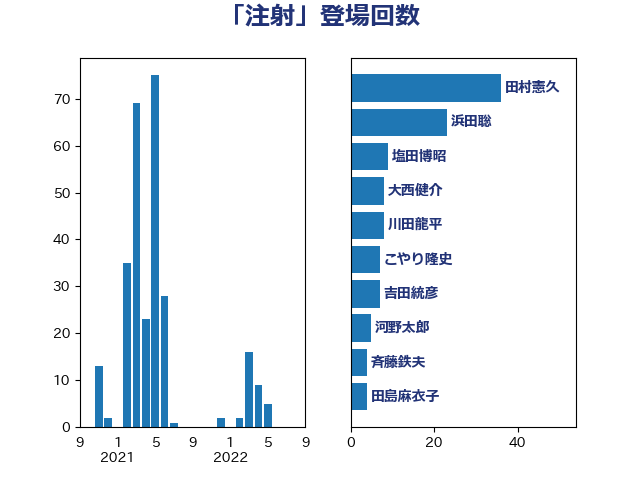

単語「注射」

| 田村憲久 | 自由民主党 | 36 回 |
| 浜田聡 | NHK党 | 23 回 |
| 塩田博昭 | 公明党 | 9 回 |
| 大西健介 | 立憲民主党 | 8 回 |
| 川田龍平 | 立憲民主党 | 8 回 |
| こやり隆史 | 自由民主党 | 7 回 |
| 吉田統彦 | 立憲民主党 | 7 回 |
| 河野太郎 | 自由民主党 | 5 回 |
| 斉藤鉄夫 | 公明党 | 4 回 |
| 田島麻衣子 | 立憲民主党 | 4 回 |
| 西村康稔 | 自由民主党 | 4 回 |
| 大石あきこ | れいわ新選組 | 3 回 |
| 山本博司 | 公明党 | 3 回 |
| 西村智奈美 | 立憲民主党 | 3 回 |
| 仁木博文 | 無所属 | 2 回 |
| 大塚耕平 | 国民民主党 | 2 回 |
| 宮本徹 | 日本共産党 | 2 回 |
| 山井和則 | 立憲民主党 | 2 回 |
| 山田勝彦 | 立憲民主党 | 2 回 |
| 平将明 | 自由民主党 | 2 回 |
| 後藤茂之 | 自由民主党 | 2 回 |
| 杉尾秀哉 | 立憲民主党 | 2 回 |
| 梅村聡 | 日本維新の会 | 2 回 |
| 熊谷裕人 | 立憲民主党 | 2 回 |
| 田村まみ | 国民民主党 | 2 回 |
| 矢倉克夫 | 公明党 | 2 回 |
| 福島みずほ | 社会民主党 | 2 回 |
| 長坂康正 | 自由民主党 | 2 回 |
| 高木啓 | 自由民主党 | 2 回 |
| 三原じゅん子 | 自由民主党 | 1 回 |
| 三浦信祐 | 公明党 | 1 回 |
| 中島克仁 | 立憲民主党 | 1 回 |
| 井坂信彦 | 立憲民主党 | 1 回 |
| 伊佐進一 | 公明党 | 1 回 |
| 吉田宣弘 | 公明党 | 1 回 |
| 城井崇 | 立憲民主党 | 1 回 |
| 塩村あやか | 立憲民主党 | 1 回 |
| 大口善徳 | 公明党 | 1 回 |
| 大野敬太郎 | 自由民主党 | 1 回 |
| 小西洋之 | 立憲民主党 | 1 回 |
| 山口壯 | 自由民主党 | 1 回 |
| 島村大 | 自由民主党 | 1 回 |
| 平沢勝栄 | 自由民主党 | 1 回 |
| 村井英樹 | 自由民主党 | 1 回 |
| 松本尚 | 自由民主党 | 1 回 |
| 熊野正士 | 公明党 | 1 回 |
| 田畑裕明 | 自由民主党 | 1 回 |
| 白石洋一 | 立憲民主党 | 1 回 |
| 石川昭政 | 自由民主党 | 1 回 |
| 羽生田俊 | 自由民主党 | 1 回 |
| 菅義偉 | 自由民主党 | 1 回 |
| 萩生田光一 | 自由民主党 | 1 回 |
| 長妻昭 | 立憲民主党 | 1 回 |
| 阿部知子 | 立憲民主党 | 1 回 |
| 高市早苗 | 自由民主党 | 1 回 |
| 高橋光男 | 公明党 | 1 回 |